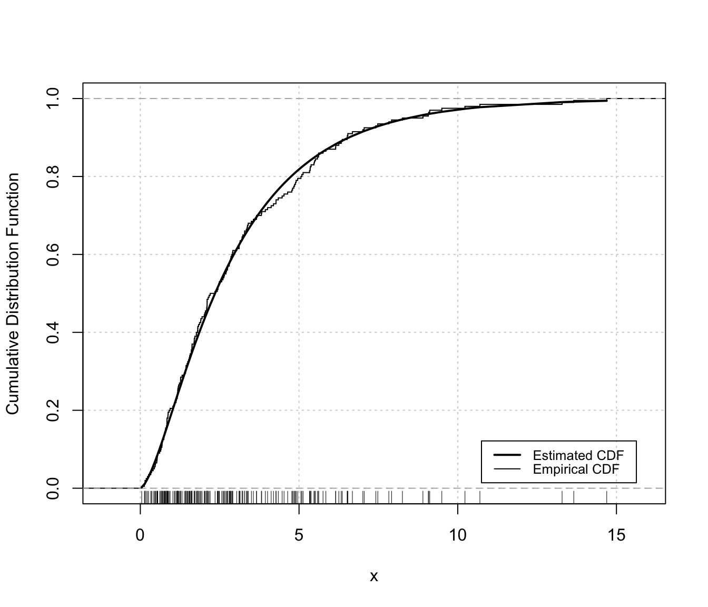

Diagnostic plots for mclustDensityBounded estimation
densityMclustBounded.diagnostic.RdDiagnostic plots for density estimation of bounded data via transformation-based approach of Gaussian mixtures. Only available for the one-dimensional case.
densityMclustBounded.diagnostic(object, type = c("cdf", "qq"), col = c("black", "black"), lwd = c(2,1), lty = c(1,1), legend = TRUE, grid = TRUE, ...)
Arguments
| object | An object of class |
|---|---|
| type | The type of graph requested:
|
| col | A pair of values for the color to be used for plotting, respectively, the estimated CDF and the empirical cdf. |
| lwd | A pair of values for the line width to be used for plotting, respectively, the estimated CDF and the empirical cdf. |
| lty | A pair of values for the line type to be used for plotting, respectively, the estimated CDF and the empirical cdf. |
| legend | A logical indicating if a legend must be added to the plot of fitted CDF vs the empirical CDF. |
| grid | A logical indicating if a |
| ... | Additional arguments. |
Details
The two diagnostic plots for density estimation in the one-dimensional case are discussed in Loader (1999, pp- 87-90).
References
Loader C. (1999), Local Regression and Likelihood. New York, Springer.
Author
Luca Scrucca
See also
Examples
# \donttest{ # univariate case with lower bound x <- rchisq(200, 3) dens <- densityMclustBounded(x, lbound = 0) plot(dens, x, what = "diagnostic") # or densityMclustBounded.diagnostic(dens, type = "cdf")
densityMclustBounded.diagnostic(dens, type = "qq")
# univariate case with lower & upper bounds x <- rbeta(200, 5, 1.5) dens <- densityMclustBounded(x, lbound = 0, ubound = 1) plot(dens, x, what = "diagnostic")

# or densityMclustBounded.diagnostic(dens, type = "cdf")
densityMclustBounded.diagnostic(dens, type = "qq")
# }